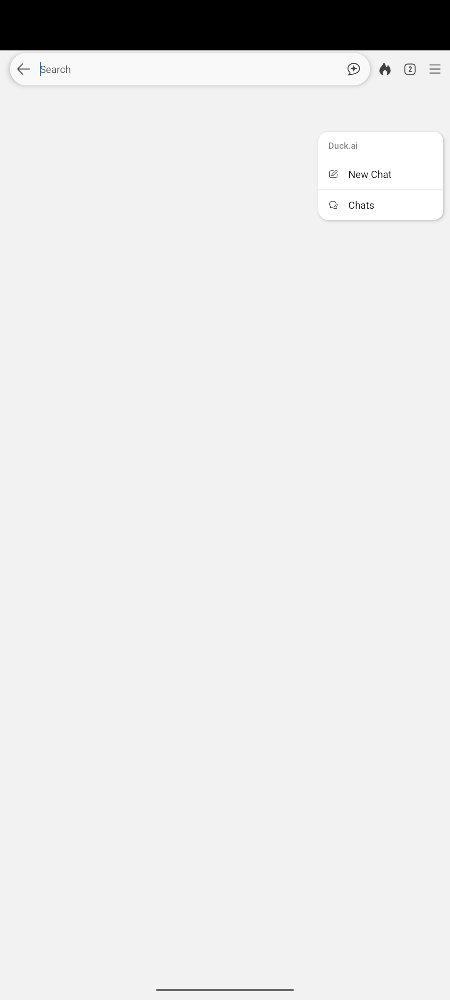

Native text is not automatically pixel-confirmed. Captures are sequential; review screenshots. No legal compliance verdict.
{
"package": "com.duckduckgo.mobile.android",
"mode": "live_entry_probe",
"entry_mode": "explicit_selector",
"fixture": false,
"input_verified": false,
"new_output_verified": false,
"status": "blocked_or_failed",
"benchmark": false,
"error": "UI hierarchy unavailable after three dump attempts: "
}
[
{
"text": "Duck.ai",
"bounds": [
788,
334,
1040,
363
],
"category": "ai_keyword_only",
"source": "native",
"review_required": true,
"pixel_confirmed": false
},
{
"text": "Duck.ai",
"bounds": [
782,
336,
864,
365
],
"category": "ai_keyword_only",
"source": "ocr",
"review_required": true,
"pixel_confirmed": true
}
]